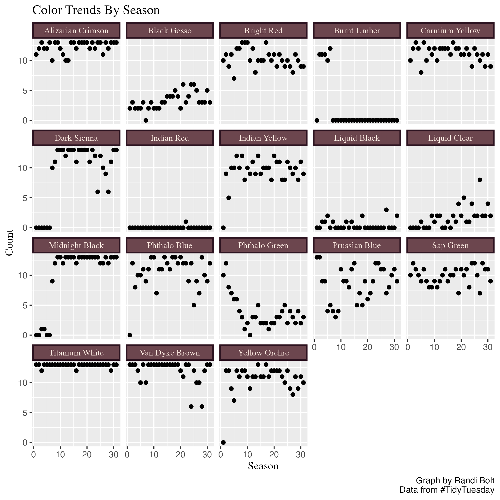

As an artist and TV personality, Bob Ross has captivated audiences for decades with his signature afro, and of course, his beautiful paintings. In this blog post, we will take a closer look at the colors that Bob Ross used during his time on “The Joy of Painting”.

Introduction
Bob Ross was known for his soothing voice, calm demeanor, and his ability to create beautiful landscapes with simple brushstrokes. One of the defining features of his painting was the vibrant and bold colors he used to bring his landscapes to life. Whether you’re a fan of The Joy of Painting or simply interested in data analytics, this post will offer you valuable insights.
Let’s consider a viewer who is new to painting, and wants to explore its joy by watching a season of “The Joy of Painting”, and following along. This viewer is budget conscious and might be disappointed to spend money on paint supplies that are hardly used. This analysis considers this use case by investigating the frequency of colors used across seasons.
This analysis will use packages the tidyverse to wrangle the data, and plotly to make interactive graphs.
library(tidyverse)
library(plotly)This analysis will only use the Bob Ross data set that is included in TidyTuesday for February 21, 2023.
Show Code
bob_ross <- read_csv(
"https://raw.githubusercontent.com/jwilber/Bob_Ross_Paintings/master/data/bob_ross_paintings.csv",
)
head(bob_ross)# A tibble: 6 × 28
...1 painting…¹ img_src paint…² season episode num_c…³ youtu…⁴ colors color…⁵
<dbl> <dbl> <chr> <chr> <dbl> <dbl> <dbl> <chr> <chr> <chr>
1 1 282 https:… A Walk… 1 1 8 https:… "['Al… ['#4E1…
2 2 283 https:… Mt. Mc… 1 2 8 https:… "['Al… ['#4E1…
3 3 284 https:… Ebony … 1 3 9 https:… "['Al… ['#4E1…
4 4 285 https:… Winter… 1 4 3 https:… "['Pr… ['#021…
5 5 286 https:… Quiet … 1 5 8 https:… "['Al… ['#4E1…
6 6 287 https:… Winter… 1 6 4 https:… "['Bl… ['#000…
# … with 18 more variables: Black_Gesso <dbl>, Bright_Red <dbl>,
# Burnt_Umber <dbl>, Cadmium_Yellow <dbl>, Dark_Sienna <dbl>,
# Indian_Red <dbl>, Indian_Yellow <dbl>, Liquid_Black <dbl>,
# Liquid_Clear <dbl>, Midnight_Black <dbl>, Phthalo_Blue <dbl>,
# Phthalo_Green <dbl>, Prussian_Blue <dbl>, Sap_Green <dbl>,
# Titanium_White <dbl>, Van_Dyke_Brown <dbl>, Yellow_Ochre <dbl>,
# Alizarin_Crimson <dbl>, and abbreviated variable names ¹painting_index, …episode_per_season
episode_per_season : groups the original bob_ross data by season and then counts how many episode is in each season.
Show Code
episodes_per_season <- bob_ross %>%
dplyr::group_by(season) %>%
dplyr::summarise(total_episodes = dplyr::n()) br_colors
br_colors : short for Bob Ross colors, this data groups the original bob_ross data by season, and then counts the total amount of color used that season.
Show Code
br_colors <- bob_ross %>%
dplyr::group_by(season) %>%
dplyr::summarise(
total_num_colors = base::sum(num_colors)) br_subset
br_subset : short for Bob Ross subset, this data groups the original bob_ross data by season and then counts how many times each color was used in each season.
Show Code
br_subset <- bob_ross %>%
dplyr::group_by(season) %>%
dplyr::summarise(
black_gesso = base::sum(Black_Gesso),
bright_red = base::sum(Bright_Red),
burnt_umber = base::sum(Burnt_Umber),
carmium_yellow = base::sum(Cadmium_Yellow),
dark_sienna = base::sum(Dark_Sienna),
indian_red = base::sum(Indian_Red),
indian_yellow = base::sum(Indian_Yellow),
liquid_black = base::sum(Liquid_Black),
liquid_clear = base::sum(Liquid_Clear),
midnight_black = base::sum(Midnight_Black),
phthalo_blue = base::sum(Phthalo_Blue),
phthalo_green = base::sum(Phthalo_Green),
prussian_blue = base::sum(Prussian_Blue),
sap_green = base::sum(Sap_Green),
titanium_white = base::sum(Titanium_White),
van_dyke_brown = base::sum(Van_Dyke_Brown),
yellow_orchre = base::sum(Yellow_Ochre),
alizarian_crimson = base::sum(Alizarin_Crimson)
) %>%
tidyr::pivot_longer(
!season,
names_to = "color",
values_to = "count")Summary Stats
mean_colors : Give the average number of colors used a season.
Show Code
mean_colors <- base::mean(br_colors$total_num_colors)
mean_colors[1] 137.871min_colors : Gives the minimum amount of colors used in a season.
Show Code
min_colors <- base::min(br_colors$total_num_colors)
min_colors[1] 92max_colors : Gives the max amount of colors used in a season.
Show Code
max_colors <- base::max(br_colors$total_num_colors)
max_colors[1] 156Color Specific Details
burnt_umber_details : Gives the episode number, season, img_src, paiting title, and youtube_scr for all episodes that used burnt umber.
Show Code
burnt_umber_details <- bob_ross %>%
dplyr::filter(Burnt_Umber == 1) %>%
dplyr::summarise(
episode = episode,
season = season,
img_src = img_src,
painting_title = painting_title,
youtube_src = youtube_src)dark_sienna_details : Gives the episode number, season, img_src, paiting title, and youtube_scr for all episodes that used dark sienna.
Show Code
dark_sienna_details <- bob_ross %>%
dplyr::filter(Dark_Sienna == 1) %>%
dplyr::summarise(
episode = episode,
season = season,
img_src = img_src,
painting_title = painting_title,
youtube_src = youtube_src)colors_graph
colors_graph : Is a graph that shows the amount of specific colors used each season.
Show Code
br_colors <- c(
"#4E1500", "#000000", "#DB0000",
"#8A3324", "#FFEC00", "#5F2E1F",
"#CD5C5C", "#FFB800", "#000000",
"#FFFFFF", "#000000", "#0C0040",
"#102E3C", "#021E44", "#0A3410",
"#FFFFFF", "#221B15", "#C79B00")
colors_graph <- ggplot2::ggplot(
br_subset,
aes(
x = season,
y = count,
fill = color)
) +
ggplot2::geom_col(
stat = "identity",
position = "stack"
) +
ggplot2::ggtitle("Colors Used Each Season") +
ggplot2::xlab("Season") +
ggplot2::ylab("Colors Used") +
ggplot2::scale_fill_manual(values = br_colors) +
ggplot2::theme(
plot.title = element_text(family = "Times"),
axis.title.x = element_text(family = "Times"),
axis.title.y = element_text(family = "Times")
)color_trends
color_trends : Is a graph that shows color trends by season.
Show Code
color_labs <- c(black_gesso = "Black Gesso",
bright_red = "Bright Red",
burnt_umber = "Burnt Umber",
carmium_yellow = "Carmium Yellow",
dark_sienna = "Dark Sienna",
indian_red = "Indian Red",
indian_yellow = "Indian Yellow",
liquid_black = "Liquid Black",
liquid_clear = "Liquid Clear",
midnight_black = "Midnight Black",
phthalo_blue = "Phthalo Blue",
phthalo_green = "Phthalo Green",
prussian_blue = "Prussian Blue",
sap_green = "Sap Green",
titanium_white = "Titanium White",
van_dyke_brown = "Van Dyke Brown",
yellow_orchre = "Yellow Orchre",
alizarian_crimson = "Alizarian Crimson")
# html_colors <- rep(html_colors, 31)
# br_subset$html_colors <- html_colors
color_trends <- ggplot2::ggplot(
br_subset,
ggplot2::aes(
x = season,
y = count)
) +
ggplot2::geom_point() +
ggplot2::facet_wrap(
vars(color),
labeller = labeller(color = color_labs)) +
ggplot2::ggtitle("Color Trends By Season") +
ggplot2::xlab("Season") +
ggplot2::ylab("Count") +
ggplot2::labs(
caption = "Graph by Randi Bolt\nData from #TidyTuesday"
) +
ggplot2::theme(
plot.title = element_text(family = "Times"),
axis.title.x = element_text(family = "Times"),
axis.title.y = element_text(family = "Times"),
strip.background = element_rect(
color="#2c1320",
fill= "#6c464e",
size=1.5,
linetype="solid"),
strip.text.x = element_text(
family = "Times",
color = "#feebe2")
) Exploritroy Data Analysis
About “The Joy of Painting”:
31 total seasons.
13 episodes per season.
403 total episodes.
When we consider our use case above, and that a canvas costs about $3. Then a budget conscious user can assume their budget for paint canvas will be about $40 per season, and about $1,210 for all 403 episodes.
Below is a table that shows the total number of episodes per season.
[,1] [,2] [,3] [,4] [,5] [,6] [,7] [,8] [,9] [,10] [,11] [,12]
season 1 2 3 4 5 6 7 8 9 10 11 12
total_episodes 13 13 13 13 13 13 13 13 13 13 13 13
[,13] [,14] [,15] [,16] [,17] [,18] [,19] [,20] [,21] [,22]
season 13 14 15 16 17 18 19 20 21 22
total_episodes 13 13 13 13 13 13 13 13 13 13
[,23] [,24] [,25] [,26] [,27] [,28] [,29] [,30] [,31]
season 23 24 25 26 27 28 29 30 31
total_episodes 13 13 13 13 13 13 13 13 13Colors Used
On average 138 colors were used each season.
The least amount of colors used in a single season was 92 in season 1.
The most amount of colors used in a single season was 156 in season 14.
When considering our use case, a budget conscious viewer may consider starting their journey at season 1 where the least amount of colors are used.
Below is a table that shows the total number of colors used per season, and a graph that shows the total number of colors used each season stacked by color that was used.
[,1] [,2] [,3] [,4] [,5] [,6] [,7]
[1,] "#4E1500" "#000000" "#DB0000" "#8A3324" "#FFEC00" "#5F2E1F" "#CD5C5C"
[,8] [,9] [,10] [,11] [,12] [,13] [,14]
[1,] "#FFB800" "#000000" "#FFFFFF" "#000000" "#0C0040" "#102E3C" "#021E44"
[,15] [,16] [,17] [,18]
[1,] "#0A3410" "#FFFFFF" "#221B15" "#C79B00"Color Trends
- Indian Red is the color that is least used. It was only featured once in season 22 episode 1 in the Painting Autumn Images shown below.

of big white clouds, and surrounded by trees.
- Burnt Umber was only used in 55 episodes. The last painting it was used in was from season 6 episode 13 and is called Blaze of Color, shown below.

surrounded by yellow and light green grass, trees, and
a vibrant blue, pink, yellow, orange, and red sunset.
- Dark Sienna may have been used instead of Burnt umber. It can in the episode of the last season, season 31 episode 13, in a painting called Wilderness Day, shown below.

trees, bushes, and a misty mountain in the background.
Below is a graph that shows the number of time a color was used each season.

Conclusion
Considering the use case of a viewer who is:
New to painting.
Budget conscious.
Disappointed when spending money on something they hardly used.
My recommendations would be:
Each season has the same amount of episodes, so the user might consider viewing the paintings from each season, and deciding which season’s paintings they like best before selecting the color they will purchase. They will enjoy painting more if they know they will enjoy the end result.
Season 1 uses the least amount of colors, and might be a good place to start for someone who is new to painting, and cannot otherwise decide which seasons paintings they enjoy the most.
Consider using similar colors interchangeably, such as Dark Sienna instead of Burnt Umber and Indian Red . The user might need to mix in more black or white, to get a similar result to the painting they are recreating, which is another thing to consider when purchasing supplies.
What other questions would our given use case be curious about answering before investing their time into “The Joy of Painting”?
Should they buy more of one paint (such as black and white) over others (such as purple)?
Is there any correlation between painting title and colors used?
What clusters of paintings use similar color palettes?
What are some other use cases for this data?
An event planner who wants to pick one painting with the least amount of colors and complexity to paint with a group of people of varying experience levels.
An experienced painter who wants to wants to work with the most colors possible.
A homeowner who wants to recreate a painting with colors that will compliment their interier design choices.